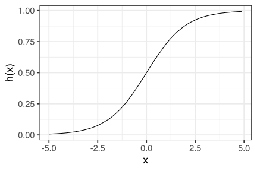
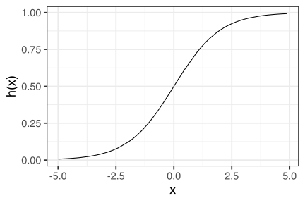

Stat 406
Geoff Pleiss, Trevor Campbell
Last modified – 16 October 2024
\[ \DeclareMathOperator*{\argmin}{argmin} \DeclareMathOperator*{\argmax}{argmax} \DeclareMathOperator*{\minimize}{minimize} \DeclareMathOperator*{\maximize}{maximize} \DeclareMathOperator*{\find}{find} \DeclareMathOperator{\st}{subject\,\,to} \newcommand{\E}{E} \newcommand{\Expect}[1]{\E\left[ #1 \right]} \newcommand{\Var}[1]{\mathrm{Var}\left[ #1 \right]} \newcommand{\Cov}[2]{\mathrm{Cov}\left[#1,\ #2\right]} \newcommand{\given}{\ \vert\ } \newcommand{\X}{\mathbf{X}} \newcommand{\x}{\mathbf{x}} \newcommand{\y}{\mathbf{y}} \newcommand{\P}{\mathcal{P}} \newcommand{\R}{\mathbb{R}} \newcommand{\norm}[1]{\left\lVert #1 \right\rVert} \newcommand{\snorm}[1]{\lVert #1 \rVert} \newcommand{\tr}[1]{\mbox{tr}(#1)} \newcommand{\brt}{\widehat{\beta}^R_{s}} \newcommand{\brl}{\widehat{\beta}^R_{\lambda}} \newcommand{\bls}{\widehat{\beta}_{ols}} \newcommand{\blt}{\widehat{\beta}^L_{s}} \newcommand{\bll}{\widehat{\beta}^L_{\lambda}} \newcommand{\U}{\mathbf{U}} \newcommand{\D}{\mathbf{D}} \newcommand{\V}{\mathbf{V}} \]
\[g_*(X) = \begin{cases} 1 & \textrm{ if } \frac{p_1(X)}{p_0(X)} > \frac{1-\pi}{\pi} \\ 0 & \textrm{ otherwise} \end{cases}\]
where
How do we estimate \(p_1(X), p_0(X), \pi\)?
A good estimator:
\[ \hat \pi = \frac{1}{n} \sum_{i=1}^n 1_{y_i = 1} \]
(I.e. count the number of \(1\)s in the training set)
This estimator is low bias/variance.
As we will soon see, it turns out we won’t have to use this estimator.
\(\P(X=x \mid Y = 1)\) and \(\P(X=x \mid Y = 0)\) are \(p\)-dimensional distributions.
Remember the curse of dimensionality?
Can we simplify our estimation problem?
Rather than estimating \(\P(X=x \mid Y = 1)\) and \(\P(X=x \mid Y = 0)\), I claim we can instead estimate the simpler ratio
\[ \frac{\P(Y = 1 \mid X=x)}{\P(Y = 0 \mid X=x)} \] Why?
Recall that \(g_*(X)\) ony depends on the ratio \(\P(X \mid Y = 1) / \P(X \mid Y = 0)\).
\[ \begin{align*} \frac{\P(X=x \mid Y = 1)}{\P(X=x \mid Y = 0)} &= \frac{ \tfrac{\P(Y = 1 \mid X=x) \P(X=x)}{\P(Y = 1)} }{ \tfrac{\P(Y = 0 \mid X=x) \P(X=x)}{\P(Y = 0)} } = \frac{\P(Y = 1 \mid X=x)}{\P(Y = 0 \mid X=x)} \underbrace{\left(\frac{1-\pi}{\pi}\right)}_{\text{Easy to estimate with } \hat \pi} \end{align*} \]
As with regression, we’ll start with a simple model.
Assume our data can be modelled by a distribution of the form
\[ \log\left( \frac{\P(Y = 1 \mid X=x)}{\P(Y = 0 \mid X=x)} \right) = \beta_0 + \beta^\top x \]
Why does it make sense to model the log ratio rather than the ratio?
From this eq., we can recover an estimate of the ratio we need for the Bayes classifier:
\[ \begin{align*} \log\left( \frac{\P(X=x \mid Y = 1)}{\P(X=x \mid Y = 0)} \right) &= \log\left( \frac{\tfrac{\P(X=x)}{\P(Y = 1)}}{\tfrac{\P(X=x)}{\P(Y = 0)}} \right) + \log\left( \frac{\P(Y = 1 \mid X=x)}{\P(Y = 0 \mid X=x)} \right) \\ &= \underbrace{\left( \tfrac{1 - \pi}{\pi} + \beta_0 \right)}_{\beta_0'} + \beta^\top x \end{align*} \]
\[ \text{Our model:}\qquad \log\left( \frac{\P(Y = 1 \mid X=x)}{\P(Y = 0 \mid X=x)} \right) = \beta_0 + \beta^\top x \]
We know that \(\P(Y = 1 \mid X=x) + \P(Y = 0 \mid X=x) = 1\). So…
\[ \frac{\P(Y = 1 \mid X=x)}{\P(Y = 0 \mid X=x)} = \frac{\P(Y = 1 \mid X=x)}{1 - \P(Y = 1 \mid X=x)} = \exp\left( \beta_0 + \beta^\top x \right), \]
\[ \frac{\P(Y = 1 \mid X=x)}{\P(Y = 0 \mid X=x)} = \frac{\P(Y = 1 \mid X=x)}{1 - \P(Y = 1 \mid X=x)} = \exp\left( \beta_0 + \beta^\top x \right), \]
After algebra… \[ \begin{aligned} \P(Y = 1 \given X=x) &= \frac{\exp\{\beta_0 + \beta^{\top}x\}}{1 + \exp\{\beta_0 + \beta^{\top}x\}}, \\\ \P(Y = 0 | X=x) &= \frac{1}{1 + \exp\{\beta_0 + \beta^{\top}x\}} \end{aligned} \]
This is logistic regression.
\[\P(Y = 1 \given X=x) = \frac{\exp\{\beta_0 + \beta^{\top}x\}}{1 + \exp\{\beta_0 + \beta^{\top}x\}} = h\left( \beta_0 + \beta^\top x \right),\]
where \(h(z) = (1 + \exp(-z))^{-1} = \exp(z) / (1+\exp(z))\) is the logistic function.
It’s symmetric: \(1 - h(z) = h(-z)\)
Has a nice derivative: \(h'(z) = \frac{\exp(z)}{(1 + \exp(z))^2} = h(z)(1-h(z))\).
It’s the inverse of the “log-odds” (logit): \(\log(p / (1-p))\).

Logistic regression is a linear classifier
\[\log\left( \frac{\P(Y = 1 \given X=x)}{\P(Y = 0 \given X=x) } \right) = \beta_0 + \beta^{\top} x\]
If the log-odds are \(>0\), classify as 1
(\(Y=1\) is more likely)
If the log-odds are \(<0\), classify as a 0
(\(Y=0\) is more likely)
The decision boundary is the hyperplane \(\{x : \beta_0 + \beta^{\top} x = 0\}\)
library(mvtnorm)
library(MASS)
generate_lda_2d <- function(
n, p = c(.5, .5),
mu = matrix(c(0, 0, 1, 1), 2),
Sigma = diag(2)) {
X <- rmvnorm(n, sigma = Sigma)
tibble(
y = which(rmultinom(n, 1, p) == 1, TRUE)[, 1],
x1 = X[, 1] + mu[1, y],
x2 = X[, 2] + mu[2, y]
)
}
dat1 <- generate_lda_2d(100, Sigma = .5 * diag(2))
logit <- glm(y ~ ., dat1 |> mutate(y = y - 1), family = "binomial")
gr <- expand_grid(x1 = seq(-2.5, 3, length.out = 100),
x2 = seq(-2.5, 3, length.out = 100))
pts <- predict(logit, gr)
g0 <- ggplot(dat1, aes(x1, x2)) +
scale_shape_manual(values = c("0", "1"), guide = "none") +
geom_raster(data = tibble(gr, disc = pts), aes(x1, x2, fill = disc)) +
geom_point(aes(shape = as.factor(y)), size = 4) +
coord_cartesian(c(-2.5, 3), c(-2.5, 3)) +
scale_fill_steps2(n.breaks = 6, name = "log odds")
g0While logistic regression produces linear decision boundaries, it is not a linear smoother
AIC/BIC/Cp work if you use the likelihood correctly and count degrees-of-freedom correctly
Most people use CV
Or we can use lasso or ridge regression or a GAM as before
For regression…
\[ \text{Model:} \qquad \P(Y=y \mid X=x) = \mathcal N( y; \:\: \beta^\top x, \:\:\sigma^2) \]
… recall that we motivated OLS with the principle of maximum likelihood
\[ \begin{align*} \hat \beta_\mathrm{OLS} &= \argmax_{\beta} \prod_{i=1}^n \P(Y_i = y_i \mid X_i = x_i) \\ &= \argmin_{\beta} \sum_{i=1}^n -\log\P(Y_i = y_i \mid X_i = x_i) \\ \\ &= \ldots (\text{because regression is nice}) \\ &= \textstyle \left( \sum_{i=1}^n x_i x_i^\top \right)^{-1}\left( \sum_{i=1}^n y_i x_i \right) \end{align*} \]
For classification with logistic regression…
\[ \begin{align*} \text{Model:} &\qquad \tfrac{\P(Y=1 \mid X=x)}{\P(Y=0 \mid X=x)} = \exp\left( \beta_0 +\beta^\top x \right) \\ \text{Or alternatively:} &\qquad \P(Y=1 \mid X=x) = h\left(\beta_0 + \beta^\top x \right) \\ &\qquad \P(Y=0 \mid X=x) = h\left(-(\beta_0 + \beta^\top x)\right) \end{align*} \] … we can also apply the principle of maximum likelihood
\[ \begin{align*} \hat \beta_{0}, \hat \beta &= \argmax_{\beta_0, \beta} \prod_{i=1}^n \P(Y_i \mid X_i) \\ &= \argmin_{\beta_0,\beta} \sum_{i=1}^n -\log\P(Y_i \mid X_i) \end{align*} \]
Unfortunately that’s as far as we can get with algebra alone.
The workhorse algorithm for obtaining \(\hat \beta_0\), \(\hat \beta\)
UBC Stat 406 - 2024